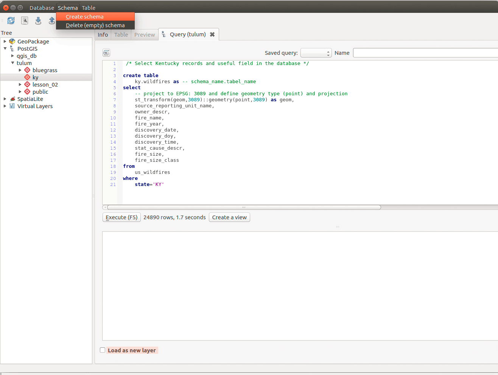
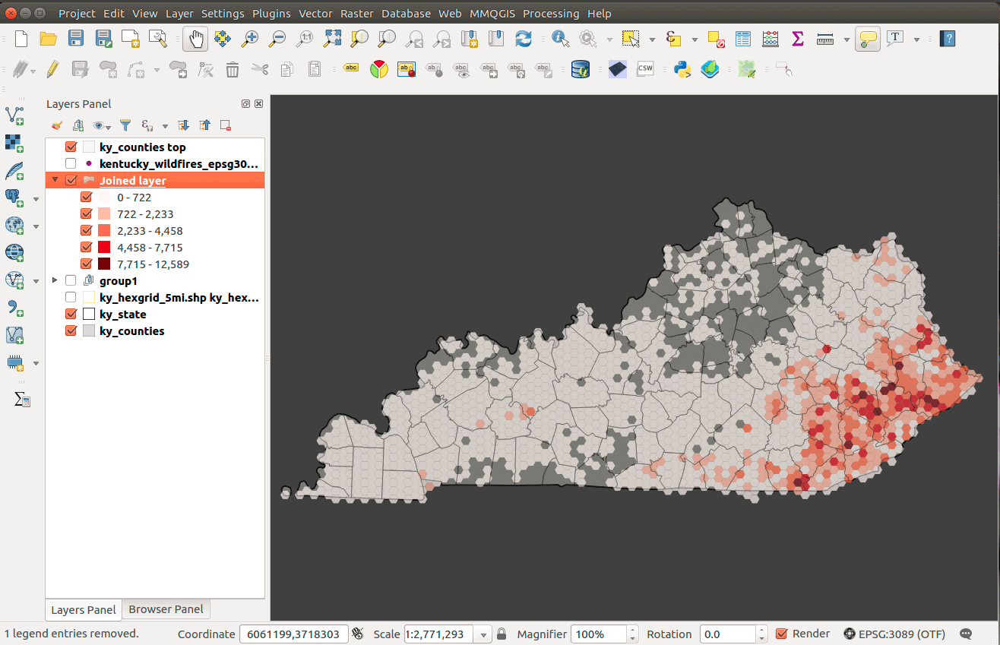
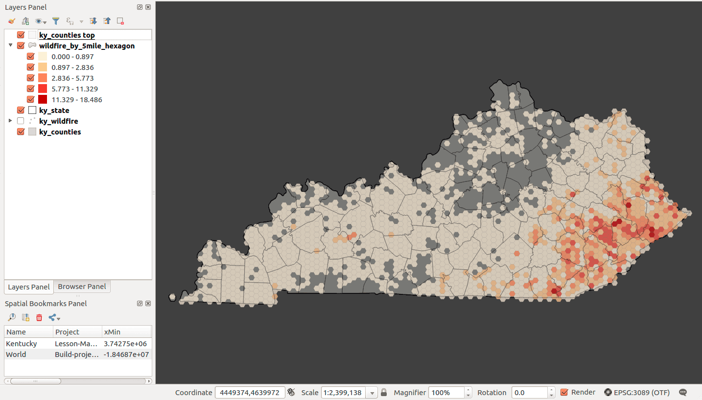
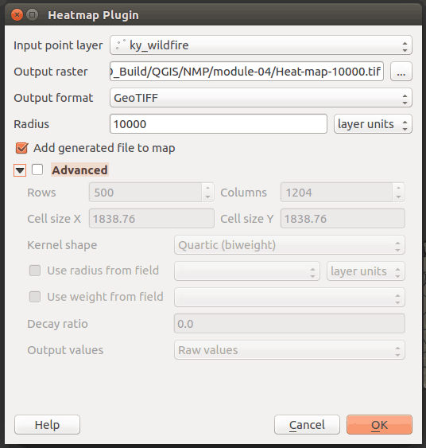
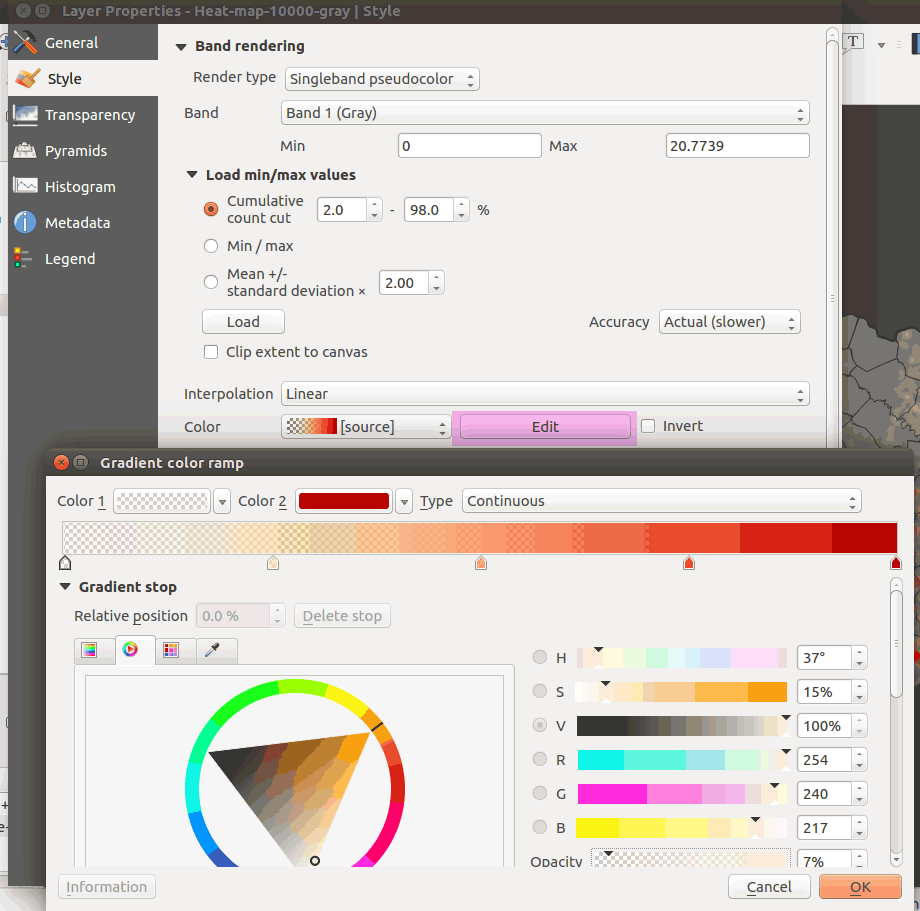
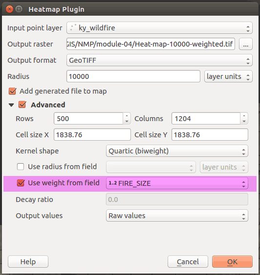

Figure 02: Filtering a layer for Kentucky wildfire points
This module takes point-level data and explores analysis techniques for their thematic representation using QGIS: spatial joins, hex binning, and the heat mapping.
In this module, we will:
This week we have a 'whopper' of a dataset:
US Wildfires 1992-2013 SpatiaLite database on Dropbox
In a previous lesson, we joined attributes from different tables based on a field of shared values. In this lesson, we'll join attributes from different layers based on shared locations of their features. We'll do a point in polygon or many to one spatial join that will count the number points from one layer that are within polygons of another layer.
We have another type of spatial join, the one to many which will join the attributes of the one that intersects the many. Imagine if you GPS mapped public water fountains in your city and you want to add attributes from a polgon layer, e.g., city council districts. A one to many spatial join would add the attributes of the council district to each intersecting water fountain point. We'll leave this type of join for another day.
The many to one spatial join is easy to imagine for our lesson; we have locations of wildfires and we want to aggregate them by county to identify which county has the most wildfire. We will create summary statistics for our attributes, such as the average fire size by state or the largest fire in each county. Because our attribute table doesn't offer consistent information describing in which county the incident occurred, we will spatial join point to polygon to analyze patterns at different units of geography.
As we found in a previous lesson, if we map raw quantities, e.g., total acres burned in a county, we'll need to normalize by the size of the county. This requires that we divide the sum of the area burned by the county's area (being sure to convert the areas to same unit). This would create a choropleth map showing the ratio of county's area burned by wildfire. What if we joined wildfires to polygons of the same size? This technique is called hex binning and helps quickly visualize point density across an area.
What are hexbins, aka hexagonal grids, and why are they cool for mappers? Hex binning is a technique used to aggregate a large number of points into hexagonal grids. The method is similar to making a choropleth map, though rather than taking political boundaries as the aggregation unit, we tile equally-sized, adjacent, and non-overlapping polygons. The regular hexagon is our polygon of choice, so you should review the hexagon's curious geometry.
We'll create hexagonal grids using the MMQGIS plugin and/or the PostGIS functions developed by CARTO. A tiled grid can be comprised of squares, equilateral triangles, or hexagons.
With over 1.7 million records in our dataset, we will need a good way to visualize and analyze these points. We'll spatial join to aggregate by county and hexagonal grids.
Unlike our previous lessons, we will need to transform our layer's coordinate systems to a local or equal-area CRS.
For displaying maps, we use the 'on the fly' projection method to make our layers overlap regardless of the layer's source CRS. When we use geospatial algorithms that have distance as an input parameter, e.g., creating hexagons of a fixed size, we need to use a projected coordinate system with a linear unit of measure.
Most of the geospatial data we find online, especially small-scale vector data, is in either WGS84 or NAD83, which are geographic coordinate systems. These geographic coordinate systems are the standard for a web mapping workflow, and we'll always need to manage them properly. For example, we know that we need to export GeoJSONs in a WGS84 CRS to use online. Try geojson.io to verify your web mapping layers.
However, a hexagon grid generated in WGS84 or NAD83 will not maintain equal areas for hexagons across a large area, which defeats the purpose of hex binning. So, we need to find a local projected coordinate to use in our analysis.
Let's review our projected coordinate reference systems and find a good CRS for our state. We call these local CRS as compared to global CRS. We have (generally) two families of local, projected CRSs we can use, Universal Transverse Mercator (UTM) and State Plane Coordinate System (SPCS).
UTM zones span the globe, based on the WGS84 GCS, and always have a meter as the linear unit of measure. The State Plane Coordinate System was developed to maintain the highest level of measurement capability on maps of U.S. states. They are tuned to each state, and most states have multiple zones tuned to even smaller regions in that state. They are based on the NAD83 GCS with multiple datum realizations (correcting for the shifting of North America due to plate tectonics) and offer both meter and feet linear units of measure.
Both families maximize the accuracy of measuring shape, distance, and area for the areas they cover. If we create a hexagon grid in one of these coordinate systems, then we're confident that our hexagons will maintain identical areas in any projection.
Which to use? UTM zones are pretty easy to use, but if you want foot as a linear unit of measure, you'll need an SPCS zone. If your state has many SPSC zones, generally the Central Zone or Single Zone will be good for the entire state. For example, Kentucky has a single zone SPSC (EPSG: 3089).
For small scale maps, we have used North America Albers Equal Area Conic projection (EPSG: 102008) for and the Mollweide projection (EPSG: 54009).
You can create a custom projection in QGIS. For example, if you wanted to tune the Albers equal-area conic projection to Hawaii's island chain you need to modify three projection parameters. First, copy the CRS definition in QGIS Project Properties | CRS at the bottom:
+proj=aea +lat_1=20 +lat_2=60 +lat_0=40 +lon_0=-96 +x_0=0 +y_0=0 +datum=NAD83 +units=m +no_defs
Then go to the QGIS menu and find Settings > Custom CRS.... Paste the definition and give the new CRS a descriptive name. The PROJ.4 parameters that you'll need to change to focus on Hawaii:
An example CRS definition would be:
+proj=aea +lat_1=9 +lat_2=36 +lat_0=13.5 +lon_0=-156 +x_0=0 +y_0=0 +datum=NAD83 +units=m +no_defs
Figure 01: Custom CRS for Hawaii island archipelago
These parallel and meridian values don't have to be exact. Visit epsg.io and look at the Well Known Text (WKT) for any CRS to discover the parameters. QGIS uses the PROJ.4 definition and of course our spatial database would use SQL (PostGIS). For more details about PROJ.4 parameters, visit http://proj4.org/.
In our workflow, we'll render features for our area of interest (from datasets in NAD83 or WGS84) to a new spatial database layer (or GeoJSON layer) in the desired projected coordinate system. Because we're doing analysis with multiple layers, we need to make sure they are all in the same projected CRS. If we want to publish our results to an interactive web map, then we'll eventually Save As.. the analysis ouptut layer to GeoJSON with a WGS84 CRS.
Extract and connect the "Wildfires_1992-2013_NAD83.sqlite" database. The database contains over 1.7 million points representing wildfires. While that is a large dataset by itself, the database contains a spatial index for the layers. That adds considerably to the file size of the database but has important advantages we'll address later in the lesson.
You may select any state to analyze for this lesson. I will select Kentucky and use the Kentucky State Plane single zone US foot (EPSG:3089), the official CRS for the state.
Add the _FPA_FOD20150323 Fires to your Layers Panel. You probably noticed that it took awhile to draw. Let's subset our desired region by right-clicking the layer and selecting Filter...:
Figure 02: Filtering a layer for Kentucky wildfire points
The query is:
"State" = 'KY'
Next, we need to save the layer to a new GeoJSON in the correct CRS, with a limited set of fields, and with full coordinate precision. Since we're interested in the size of the fire, we will only keep the field name FIRE_SIZE, which is the the area burned in acres. Right-click the layer and select Save As...:
Figure 03: Saving a GeoJSON layer for analysis
Repeat the same steps for the county and state layers. We want to have three layers in our Layers Panel:
Figure 04: Three layers in Map Canvas
Let's move the wildfire data from the SpatiaLite database to our PostGIS database, where we can leverage spatial indexes. PostGIS can create a spatial index that relates all geometry features in database. If we want to find which wildfires intersect a county, PostGIS queries this hidden table to quickly find matching records. This is done largely behind the scenes as long as we enable Create spatial index either during import or in DB Manager's Info table for the folder. Read more about PostGIS spatial indexing.
Let's first import the entire wildfire dataset into our database. This might take a little time, but it should be successful.
Figure 05: Import into PostGIS database
execute some SQL queries to isolate our state and transform the layers' CRS when we add them to our new schema in PostGIS I'm calling "ky" and intend to maintain all of my spatial layers in the EPSG: 3089 CRS. You can keep your layers in the public schema, but you should be aware of the CRS for your layers.
Let's inspect our fire data. To limit the records returned from this huge set, use the following SQL:
/* View the first 10 records in the database */select*fromus_wildfireslimit10
This query will give us enough attributes to craft a query that extracts just Kentucky:
/* Select Kentucky records in the database */select*fromus_wildfireswherestate = 'KY'
Then we want to find only the fields pertinent to our analysis:
/* Select Kentucky records and useful field in the database */selectid,geom,source_reporting_unit_name,owner_descr,fire_name,fire_year,discovery_date,discovery_doy,discovery_time,stat_cause_descr,fire_size,fire_size_classfromus_wildfireswherestate = 'KY'
Now, use the st_transform() function to project our layer to EPSG: 3089:
/* Select Kentucky records and useful field in the database */selectid,st_transform(geom,3089) as geom, -- project to EPSG: 3089source_reporting_unit_name,owner_descr,fire_name,fire_year,discovery_date,discovery_doy,discovery_time,stat_cause_descr,fire_size,fire_size_classfromus_wildfireswherestate = 'KY'
Finally create the new layer in the new schema:
/* Select Kentucky records and useful field in the database */ky.wildfires as -- schema_name.table_nameasselectid,-- project to EPSG: 3089 and define geometry type (point) and projection SRID-- geometry type and SRID are found in the source (from) tablest_transform(geom,3089)::geometry(point,3089) as geom,source_reporting_unit_name,owner_descr,fire_name,fire_year,discovery_date,discovery_doy,discovery_time,stat_cause_descr,fire_size,fire_size_classfromus_wildfires -- the source tablewherestate='KY'; -- end first statement/* Second statement to designate primary key */alter tableky.wildfires(id); -- end second statement

Figure 06: Create new table in a new schema
After a successful query is executed. Look at the Info tab for the table. DB Manager will highlight various items that need to be addressed. While we can write SQL to accomplish this, e.g., vacuum analyze table_name let's go ahead and click the links that DB Manager shows:

Figure 07: Fixing a new table's issues
What if we forgot to add a field? We can always delete the table with drop table table_name and execute a new query. If we need to add a unique identifier (primary key) we can execute this query:
/* Create new id field as a primary key (auto incrementing and always unique) */alter tableky.wildfiresadd columnid serial primary key;
Check your table's Info tab again to see if you are good to go:
Figure 08: A table ready for analysis
Now create queries to use on the county and state layers to extract Kentucky.
The county layer:
/* Create counties layer in new projection */ky.countiesasselectid,-- project to EPSG: 3089 and define geometry type (multipolygon) with projection-- geometry type and SRID are found in the source (from) tablest_transform(geom,3089)::geometry(multipolygon,3089) as geom,geoid,name,aland,awaterfromcb_2016_us_county_500kwheregeoid like '21%' -- Kentucy counties start with a 21order bygeoid; -- alphabetize output/* Second statement to designate primary key */alter tableky.counties(id);
Now, the state layer:
/* Create state layer in new projection */ky.stateasselectid,-- project to EPSG: 3089 and define geometry type (multipolygon) with projection-- geometry type and SRID are found in the source (from) tablest_transform(geom,3089)::geometry(multipolygon,3089) as geom,geoid,name,aland,awaterfromcb_2016_us_state_500kwheregeoid like '21%'; -- Kentucky's geoid is 21/* Second statement to designate primary key */alter tableky.state(id);
Verify your database has Kentucky wildfire points, counties, and state outline.
Figure 09: Layers are loaded for analysis
Let's add some initial styles to our layers. Since we're dealing with fire, let's make our points glow against a darker background. Select the wildfire points Style tab to Graduated by size using the _firesize attribute. Also, change the feature blending mode to Addition. The settings could be similar to:

Figure 10: Styling point data for glow effect
Finally, style the other layers and set the Project Properties background color to a dark gray and make sure the on-the-fly CRS is set to "EPSG: 3089":

Figure 11: Simple map set up
This is a decent visualization of wildfires in Kentucky. We're using the unique feature blending modes to imply wildfire rates; glowing areas imply more wildfire. However, we might need to quantify the rates, i.e., "what is maximum amount of wildfire area burned?" To accomplish this, we need to calculate the amount of wildfire area burned by an enumeration unit. We can count fire by county and then normalize by the county's area. The hexbin provides a useful unit, because we can easily show density with a spatial join as all hexagons are the same size.
QGIS has wrapped this type of analysis into a nice tool. We won't have the same type of control over attributes as we do in a spatial database, but it works. First, make sure you have the point and polygon layers in your Layers Panel. QGIS tools use these layers for selecting input. Find the tool in QGIS menu > Vector > Data Management Tools > Join attributes by location.
The tool settings are almost identical to our spatial join SQL query. The main difference is that we can't select the attributes we want in the output and need to select Take summary of intersection features in the Attribute summary parameter. This allows for the "many-to-one" type spatial join. The tool settings should be:
Figure 12: Join attributes by location tool
Let's discuss some considerations using this tool. First, you should use the GeoJSON layers with minimal fields or remove as many fields as necessary from a database layer. If any number field is encoded as a TEXT data type, this tool also won't change data types "on the fly". Also, every NUMERIC attribute will be subjected to summary statistics you select, though they might not make sense. So, as always, we need to be aware of our attributes before using this tool and convert them if necessary.
Depending on the format to which we output, we could change our column names. If you don't specify a name in the Joined layer output you are making a temporary layer. You shouldn't have any field name changes. That's the preferred method. If you add a name for the output, it defaults to Shapefile format and truncates our long column names.
Figure 13: output of Join attributes by location tool
Look at the fields, sumfire_size and count. This aggregates the acres of fire and the number of fires for each county. Many of these attributes are not useful. Let's not take a look at this method in PostGIS.
PostGIS is very efficient with spatial joins, but we'll divide the process in two steps.
st_intersects() function and group by clause. This will create an attribute table that contains the fields geoid, sum_fire_acres, and count of wildfires./* Spatial join wildfire points to county polygons *//* sum the fire acres and count the points in each polygon */selectky.counties.geoid,sum(ky.wildfires.fire_size) as sum_fire_acres, -- sum() functioncount(*) as count -- count() functionfrom/* Target layer with enumeration units */ky.countiesjoin/* Source layer that will be counted/analyzed */ky.wildfireson/* Geometric predicate intersect */st_intersects(ky.wildfires.geom,ky.counties.geom)group by/* The attribute that aggregates the intersecting points, the county geoid */ky.counties.geoidorder bycount desc
This query yields:
Figure 14: Output from SQL spatial join query
To create a final table, we use the create table clause:
ky.fire_analysisasselectky.counties.geoid,sum(ky.wildfires.fire_size) as sum_fire_acres, -- sum() functioncount(ky.wildfires.*) as count -- count() functionfrom/* Target layer with enumeration units */ky.countiesjoin/* Source layer that will be counted/analyzed */ky.wildfireson/* Geometric predicate intersects */st_intersects(ky.wildfires.geom,ky.counties.geom)group by/* The attribute that aggregates the intersecting points, the county geoid */ky.counties.geoidorder bycount desc
If you have null values, let's remove them:
/* Convert null values to 0 since we know null is no fire here */updateky.fire_analysissetsum_fire_acres = 0wheresum_fire_acres is null
Finally, create the attribute join so we can create the choropleth map. We do not need to create table since we've made all the density measurements in this join:
selectky.counties.id,ky.counties.geom,ky.counties.geoid,ky.counties.name,ky.counties.aland,ky.counties.awater,ky.fire_analysis.sum_fire_acres,ky.fire_analysis.count,/* Find ratio burned with this conversion: 4046.86 sq m in an acre */((ky.fire_analysis.sum_fire_acres*4046.86)/ky.counties.aland)::numeric as ratio_burnedfromky.fire_analysis, ky.countieswhereky.counties.geoid = ky.fire_analysis.geoidorder byratio_burned desc
Let's now symbolize the county polygons by the attribute ratio_burned:
Figure 15: Example choropleth map of wildfires by county
The workflow for hex binning is to
Let's start with the QGIS tool-based workflow using a plugin to create the hexgrid and then tool to perform the spatial join.
Let's get our first plugin for QGIS! One of the remarkable features of Q is the fervor and diversity of plugin development. Many of the tools we commonly use in QGIS started out as a plugin. We're going to install the MMQGIS plugin via QGIS's Plugin Manager. Find it the QGIS menu Plugins > Manage and Install Plugins... Then, search for "MMQGIS" and install it:

Figure 16: Install MMQGIS plugin
After a successful install, find the new tools in QGIS's main menu entry, MMQGIS, which you should launch. Find the Create Grid Layer dialog to create a hexagonal grid layer. Find the plugin here:
Figure 17: Using MMQGIS plugin Create Grid Layer function
You should select the layer you want cover with a hexagonal grid. Since we're analyzing Kentucky wildfires, let's select that layer. The other parameters should be obvious except for the X and Y dimension. The correspond to the short diameter of a hexagon (X spacing) and the long diameter (Y spacing). If we wanted a 5-mile long-diameter hexagon, the Y spacing parameter would be 5*5280 = 26400:

Figure 18: Creating a hex grid with a 5-mile long diameter for each hexagon
Your output should look similar to:
Figure 19: A 5-mile long diameter hexgrid covering Kentucky
It outputs to a Shapefile.
Launch the QGIS menu tool > Vector > Data Management Tools > Join attributes by location and create a temporary layer that:
The tool parameters should look like:

Figure 20: Spatial join wildfires to 5-mile long diameter hexgrid
After a successful output, take a look at the attribute table. You should have a field called "sum_fire_size" which is total acreage per hexagon. You can sort by this field (double-clicking the field name) and select the record. That will highlight the hexagon with the most fire.
Access the properties for your joined layer and created a graduated color scheme using the sum_fire_size field. Add a little transparency to the layer and remove the hexagon outlines. Your style panel should look like:
Figure 21: Styling the hexagon layer

Figure 22: Your final map visualization
The next section will explore the same process in SQL.
This tool provides convenience but lacks many of the options we find in our SQL method. Remember to save your successful SQL queries as .sql text files and reusing on different databases and datasets.
We'll create hexagonal grids using a PostGIS function created by CARTO (formally CartoDB). A PostGIS function adds extra geoprocessing capabilities to our database. You can visit their repository to find more functions and will use their _CDBHexagon.sql function.
Copy and paste this SQL in DB Manager and hit Execute: CDB_Hexagon.sql. Once this function is loaded, it can be accessed in the following statement:
CDB_HexagonGrid(geometry, length)-- Units will be the in the input SRID
You can make a hexagon exactly 5-miles wide on the long diagonal (outer diameter) with the equation side = diagonal/2. Hexagons in an equal-area projected CRS also have the same area when they're projected to other CRSs. That's the purpose of hex binning; making polygons of the same size to measure density.
Let's use SQL to create a 5-mile diagonal hexagon grid. Use the following statement to cover your state of choice:
/* Make hexagonal grid */ky.hexgrid_5mileasselect/* function requires geometry field and length of side. Notice the conversion to 2.5 miles */CDB_HexagonGrid(geom, 2.5*5280)::geometry(polygon, 3089) as geomfromky.state;/* add unique identifier, which is important for the spatial join! */alter tableky.hexgrid_5mileadd columnid serial primary key;
Now, inspect the layer in the DB Manager Info. Click on the Create spatial index link and then add the layer to the Map Canvas. Now you're ready to do the spatial join

Figure 23: Five-mile diagonal hexagons
/* Make hexagonal grid *//* Tip. Uncomment the following line to delete previous versions.This helps you explore options */-- drop table ky.hexgrid_5km;ky.hexgrid_5kmasselect/* function requires geometry field and length of side. Notice the conversion to 2.5 miles */CDB_HexagonGrid(st_collect(st_transform(geom,102008)), 2500)::geometry(polygon, 102008) as geom-- collect and project to Albers equal-area projection with meter as linear unitfromky.wildfires; -- use point layer for input geometry/* add unique identifier, which is important for the spatial join! */alter tableky.hexgrid_5kmadd columnid serial primary key;
What if you wanted to make spatial index in SQL? Let's use the following statements:
/* Spatial index function syntax:CREATE INDEX [indexname] ON [tablename] USING GIST ( [geometrycolumn] );The GIST stands for Generalized Search Tree */on ky.hexgrid_5mile using gist (geom);
And finally:
/* Then clean up! */vacuum analyze ky.hexgrid_5mile;
Let's say you have point layer that you want to cover with hexagons. We need to use the st_collect() function to gather the points into a single feature. Let's also project our data for a suitable CRS for North America:
This procedure is exactly the same of joining wildfire points to county polygon. The main difference is using the id field as the group by column. Let's do the spatial join and then attribute join.
/* Spatial Join */ky.wildfire_by_5mi_hexagonasselectky.hexgrid_5mile.id as id,sum(ky.wildfires.fire_size) as sum_fire_acres, -- sum() functioncount(ky.wildfires.*) as count -- count() functionfrom/* Target layer with enumeration units */ky.hexgrid_5milejoin/* Source layer that will be counted/analyzed */ky.wildfireson/* Geometric predicate intersects */st_intersects(ky.wildfires.geom,ky.hexgrid_5mile.geom)group by/* The attribute that aggregates the intersecting points, the county geoid */ky.hexgrid_5mile.idorder bycount desc;/* Convert null values to zero for summary statistics */updateky.wildfire_by_5mi_hexagonsetsum_fire_acres = 0wherecount = 0
Now let's finish with the attribute join:
/* Attribute Join */selectky.wildfire_by_5mi_hexagon.id,ky.hexgrid_5mile.geom,ky.wildfire_by_5mi_hexagon.sum_fire_acres,ky.wildfire_by_5mi_hexagon.countfromky.wildfire_by_5mi_hexagon, ky.hexgrid_5milewhereky.wildfire_by_5mi_hexagon.id = ky.hexgrid_5mile.id;

Figure 24: Five-mile hexbin map showing cumulative square miles of wildfire area
Note that we don't need to normalize unless you want to show the ratio of burned area in each hexagon.
Let's now turn to representing the same data with the heatmap, a visualization technique that produces a density raster. This tool is often called a kernel density function and the QGIS's help explains that it will "create a density (heatmap) raster of an input point vector layer. The density is calculated based on the number of points in a location, with larger numbers of clustered points resulting in larger values. Heatmaps allow easy identification of "hotspots" and clustering of points."
Ensure that the heatmap plugin is installed and activated. In QGIS main menu find Plugins > Manage and Install Plugins... > Heatmap.

Figure 25: Heatmap plugin for QGIS
Open the Heatmap Plugin (Raster > Heatmap > Heatmap ...). Within this dialog, select the wildfire point layer as input. The plugin will write a raster file in a GeoTIFF format to disk. Each cell in this raster will be a numeric value representing the number of fires per some area. Adjust the Radius parameter to 10,000 feet, which "specifies the distance around a point at which the influence of the point will be felt. Larger values result in greater smoothing, but smaller values may show finer details and variation in point density," as described in QGIS's help documentation.
Leave Advanced option disabled for now.

Figure 26: Settings for creating a heat map in QGIS
Let's look at an example using the search Radius parameter. If only two fires happened in a search radius and they happened at the same location, you would get an output value of 2 (fires per search radius). If they more distant than the search radius, the output value would be 1. If they were half the distance of the search radius from each other, the output value could 1.5, but it could any value between 1 and 2 depending on the kernel shape) that defines the significance of neighboring points.

Figure 27: Kernel shapes from Wikipedia
The default result is a raster map where the lightest color indicates a high density of the given phenomena and the darker color shows a low density. You could say occurrences of fire in the search radius. If our search radius was sufficiently large, the output value would be very close to the total number of fires in the point layer. The values of the raster are currently being displayed using a continuous singleband grayscale.

Figure 28: Default grayscale output of Heatmap tool
Let's take a look at the raster layer's Properties > Style tab, which is significantly different than vector styles.
Figure 29: Raster style properties
In singleband gray rasters, cell values show a quantity, the number of wildfires in our search radius, which means we have a continuous range between the minimum and the maximum number of fires. By default, the grayscale color ramp is stretched to the min/max values, where black represents the minimum value and white represents maximum value. Click on Load min/max values, select Min/Max, enable Accuracy > Actual (Slower), and click Load. This gives us the total range of values in our dataset to represent. The hit Apply:

Figure 30: Adjust raster settings to show full range of values to symbolize
Compare with the Cumulative count cut option, which compresses the tail ends of the frequency distribution. Adjust the numbers and see how you can best find the "hot spots" on the map:
Figure 31: Cumulative count cut method of defining range of values to symbolize
Using the singleband gray Render type will help us understand how raster cell values get colored on the map. However, it's a very exciting image and we how more options with different render types.
Let's produce a colored version of this raster by adjusting the layer's properties. Under Render type, choose Singleband pseudocolor using a OrRd color scheme.

Figure 32: Rendering settings for singleband pseudocolor
Since we're concerned with high-density areas, let's make the low-density areas have less opacity. Click the Color Edit button and change the transparencies of the low-density color values:

Figure 33: Custom gradient color ramps
We have the option to embed widgets in the legend. The default widget is a transparency slider, which allows us to conveniently change a raster layers transparency.
Find the slider in the raster layer's Properties > Legend tab. Add the widget and hit OK:
Figure 34: Raster layer transparency slider
Map output:
Figure 35: Raster heatmap using pseudocolor settings and transparency slider
We can weight the points that we input to a heatmap function by a numeric attribute. We have fire size for each point that we can use. Let's create a new heatmap with the following options set:

Figure 36: Weighting a heatmap with an attribute
After we style the raster output, you should see a similar map:

Figure 37: A heatmap using fire size to weight the input points
This map shows the amount of land burned by fire (some areas burned multiple times over two decades), while the count of fires per search area shows the frequency of wildfire. It should be obvious that it takes only one wildfire to create massive damage.
As we can see, the heatmap gives us a lot of options to visualize spatial patterns, but it takes experimentation to find an appropriate setup. Keep at it and don't view my examples as the only option.
One last tip for working in raster: use transparency for your raster layers.
As we have explored in this lesson, we have numerous techniques to visualize point data in QGIS. Let's summarize the techniques we've used so far in a few maps.
Figure 38: Dot map (with custom feature blending mode) and hexagonal grid

Figure 39: Two subtly distinct heatmaps
Let's explore some techniques to improved our productivity and experience with spatial databases.
Here is where SQL can be shine. Imagine we want to add summary tables or clean up data to serve popup content on a web map. We need a way prep and combine field values to make a pretty table or popup. We'll use a couple numeric and string functions to prep and use the concatenate operator to combine string data.
If we wanted to create summary statistic tables that we could export for using in a layout, we could apply the following query:
/* Make table with summary statistics */ky.summary_statsasselectavg(sum_fire_acres) as "Average acres burned by hexagon", -- average statistical functionsum(sum_fire_acres) as "Total cumulative acres burned",max(sum_fire_acres) as "Largest etc."fromky.wildfire_by_5mi_hexagon
We can concatenate string columns together to make useful bits of information, such as for a web page and popup menus. Concatenation strings simply adds them two non null field together. The concatenation operator is PostGIS is the double pipe: ||. Let's concatenate a summary statistics table for export to a web page:
/* Create HTML for addition to web page */ky.county_summary_htmlasselect('<h3>'|| ky.counties.name|| ' County</h3>Total wildfire: '|| round(ky.fire_analysis.sum_fire_acres::numeric,1) -- round() function needs to cast to numeric|| ' ac with a cumulative percent burned of '|| round((((ky.fire_analysis.sum_fire_acres*4046.86)/ky.counties.aland)::numeric)*100,1)|| '%<br>') as htmlfromky.fire_analysis, ky.countieswhereky.counties.geoid = ky.fire_analysis.geoidorder byky.fire_analysis.sum_fire_acres desc
Export this as a CSV file format and you should get lines of HTML:
Pike CountyTotal wildfire: 116745.0 ac with a cumulative percent burned of 23.2%Perry CountyTotal wildfire: 73999.4 ac with a cumulative percent burned of 34.0%Knott CountyTotal wildfire: 67884.7 ac with a cumulative percent burned of 30.2%Floyd CountyTotal wildfire: 59944.7 ac with a cumulative percent burned of 23.8%Clay CountyTotal wildfire: 50828.3 ac with a cumulative percent burned of 16.9%Breathitt CountyTotal wildfire: 46893.1 ac with a cumulative percent burned of 14.9%Leslie CountyTotal wildfire: 45301.8 ac with a cumulative percent burned of 17.7%Whitley CountyTotal wildfire: 44057.6 ac with a cumulative percent burned of 15.7%Harlan CountyTotal wildfire: 41379.0 ac with a cumulative percent burned of 13.9%Knox CountyTotal wildfire: 33251.6 ac with a cumulative percent burned of 13.4%Martin CountyTotal wildfire: 29157.4 ac with a cumulative percent burned of 19.8%
You might recognize this format and be able to add this to a web page. Should render in HTML to:
Let's say we want to build a popup menu content from our wildfire points. After inspecting the attributes, try to build a sentence from the field values. First, we need to remove all null values to concatenate:
/* Field values cannot have null values to concatenate */updateky.wildfiressetdiscovery_time = 'Unnamed wildfire'wherefire_name is null
Then, create the point layer:
/* Create a single field that serves popup menu content for wildfire points */ky.wildfire_points_with_popup_contentasselect('<h3>' || fire_name || '</h3>'|| fire_size|| ' ac fire on '|| left(discovery_date, 10) -- left() function returns left 10 characters|| '<br>caused by '|| stat_cause_descr ) as popup,geom::geometry(point,3089) as geomfromky.wildfiresorder byfire_size desc
The popup content should be similar to:
Unnamed wildfire10000 ac fire on 1999-11-08caused by ArsonUnnamed wildfire7500 ac fire on 2001-11-01caused by ArsonUnnamed wildfire4700 ac fire on 2000-11-02caused by ArsonUnnamed wildfire4070 ac fire on 2001-11-02caused by ArsonUnnamed wildfire3860 ac fire on 2000-11-01caused by ArsonUnnamed wildfire3675 ac fire on 2000-10-31caused by ArsonUnnamed wildfire3539 ac fire on 2000-10-30caused by ArsonUnnamed wildfire3500 ac fire on 2000-11-03caused by Arson
Should render in HTML to:
After a successful query, you can export that as a GeoJSON in the WGS84 CRS and you're ready for web mapping!
Let's flirt with an ambitious goal. When we introduced the CARTO function to tesselate hexagons for our hex binning exercise, we used PL/pgSQL a procedural programming language supported by the PostgreSQL. This language is included by default with new server installations and other languages can accessed with extensions.
Imagine we wanted to make a function that gave us a point layer of fires by cause and at least a certain size. The function would be called with two arguments:
function_name(cause, mimumum_fire_size)
Output would be table of fires that met those criteria. Here is the full function:
/* Find fire by cause that are at least a minimum size */-- just as the words say!-- name of function and list variables, their names, and data typesfire_by_cause(cause varchar, acres real)returns table-- function returns a table-- define order, field name, and field data type(id int8,geom geometry(Point,4269),cause_action varchar,size_ac float8,name varchar,report_unit_name varchar,discover_date varchar)as$$ -- convention that shows function blockBEGINreturn query -- return the select statementselectus_wildfires.id,us_wildfires.geom as geom,us_wildfires.stat_cause_descr,us_wildfires.fire_size,us_wildfires.fire_name,us_wildfires.nwcg_reporting_unit_name,us_wildfires.discovery_datefrompublic.us_wildfires -- source tablewherefire_size > acres -- acres is variableandstat_cause_descr like cause -- cause is variableorder byfire_size desc;END;$$ -- convention that shows function blocklanguage 'plpgsql';/**** Example of use: find all arson at least 1,000 acres ****/select*fromfire_by_cause('%Arson%', 1000);/**** Example of use: create point layer ****/arson_larger_than_1000asselect*fromfire_by_cause('%Arson%', 1000);alter tablearson_larger_than_1000(id), -- define which field is unique id-- define geometry type of geom column. Source table gives geometry(Point,4269)alter column geom TYPE geometry(Point,4269);
Now you have simple tool to analyze fire by cause and size. Example output from the above query:

Figure 40: Wildfire caused by arson and are greater than a 1,000 acres